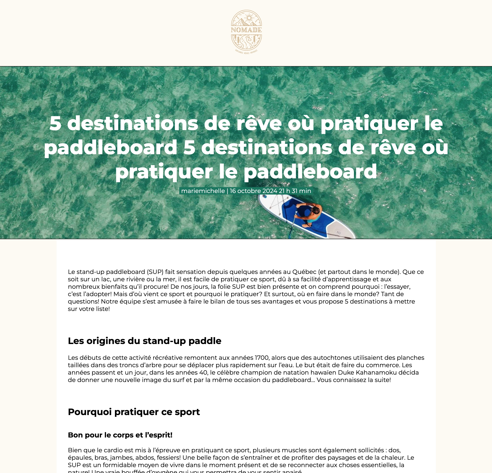

Pour cet exercice vous et votre coéquipier (fictif) devez créer un microsite (pour l'exercice ce site ne sera qu'une page) permettant de présenter des conseils voyage.
Votre coéquipier a conçu un mockup HTML sur CodePen, ainsi que le thème WordPress du site. Il compte maintenant sur vous pour le rendre dynamique dans WordPress.
Aperçu du résultat 👇

Matériel
Pen de départ
Médias 🖼️
Arrière plan du la section héro (image mise en avant)
Thème débuté par votre co-équipier fictif
Requis
Installez en local une copie en Français du Canada de WordPress pour votre client.
Installez le thème réalisé par votre collègue. Si vous l'avez installé et vous le cherchez, sachez que c'est le thème qui se nomme "Voyage".
Créez un modèle nommé voyage pour les pages de ce type (vous pouvez partir d'un autre modèle).
Faite en sorte que le modèle suive les balises HTML fourni dans le codePen de votre collège.
Lorsque cela est réglé. Créez une page dans Wordpress et appliquez lui votre nouveau modèle voyage.
Allez éditer votre modèle pour dymaniser les contenus titre, contenu, image d'avant-plan, auteur, date et heure de publication.
Pour tester, vous pouvez créer une deuxième page avec d'autres contenu différents en utilisant le même modèle.
Contenu
TITRE: 5 destinations de rêve où pratiquer le paddleboard
AUTEUR, DATE et HEURE: Vous même, et la date et l'heure que vous publierez.
IMAGE: Veuillez téléchager l'image dans les médias en haut de cette page et l'intégrer comme image d'avant-plan de la page.
CONTENU:
<p>Le stand-up paddleboard (SUP) fait sensation depuis quelques années au Québec (et partout dans le monde). Que ce soit sur un lac, une rivière ou la mer, il est facile de pratiquer ce sport, dû à sa facilité d’apprentissage et aux nombreux bienfaits qu’il procure! De nos jours, la folie SUP est bien présente et on comprend pourquoi : l’essayer, c’est l’adopter! Mais d’où vient ce sport et pourquoi le pratiquer? Et surtout, où en faire dans le monde? Tant de questions! Notre équipe s’est amusée à faire le bilan de tous ses avantages et vous propose 5 destinations à mettre sur votre liste! </p>
<h2>Les origines du stand-up paddle</h2>
<p>Les débuts de cette activité récréative remontent aux années 1700, alors que des autochtones utilisaient des planches taillées dans des troncs d’arbre pour se déplacer plus rapidement sur l’eau. Le but était de faire du commerce. Les années passent et un jour, dans les années 40, le célèbre champion de natation hawaïen Duke Kahanamoku décida de donner une nouvelle image du surf et par la même occasion du paddleboard… Vous connaissez la suite!</p>
<h2> Pourquoi pratiquer ce sport</h2>
<h3>Bon pour le corps et l’esprit! </h3>
<p>Bien que le cardio est mis à l’épreuve en pratiquant ce sport, plusieurs muscles sont également sollicités : dos, épaules, bras, jambes, abdos, fessiers! Une belle façon de s’entraîner et de profiter des paysages et de la chaleur. Le SUP est un formidable moyen de vivre dans le moment présent et de se reconnecter aux choses essentielles, la nature! Une vraie bouffée d’oxygène qui vous permettra de vous sentir apaisé.</p>
<h3>Travailler son équilibre</h3>
<p >Le stand-up paddle est un bon moyen d’améliorer son équilibre. En embarquant sur une planche la première fois, vous constaterez que se tenir aisément debout est un peu plus difficile qu’on le pense. Faites vos premiers pas sur un plan d’eau calme. Avec de la pratique, vous pourrez par la suite vous aventurer sur des eaux plus agitées. </p>
Notes de cours 📚